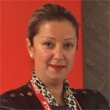

<div class="container">
	<div class="row">
        <div id="speaker-detail" class="col-lg-8 col-lg-offset-3">
            <div class="row">
            	<button title="Kapat (Esc)" type="button" class="mfp-close">×</button>
                <div class="col-md-4 col-lg-4">
                    <br />
                </div>
                <div class="col-md-8 col-lg-8">
                    <h2>Gözde Erbaz - COde.org Türkiye/Robincode.org</h2>
                    <h3>İnovasyon uzmanı/cyber security</h3>
                    <p>İş kadını/sanayici/Siber Güvenlik Uzmanı/kamu yönetimi ve siyaset bilimi uzmanı/Girişimcilik ve İnnovasyon uzmanı/.Erken yaşta bilgisayar bilimleri ve programlama eğitimlerini tüm dünyaya yaygınlaştıran facebook,google,apple,amazon başta olmak üzere birçok önemli şirket tarafından kurulan CODE.ORG’un TÜRKİYE sorumlusu,Robincode.org Sosyal girişimi Kurucusu ve yatırımcısı,Robincode Bilişim Teknoloji ve Girişimcilik Derneği kurucusu ve başkanıdır. Aile şirketlerine ait olan fabrikalarında yönetim kurulu üyesi olarak görevlerine devam etmektedir.Tamamı kendi girişimi olan ve uluslararası danışmanlık,yazılım ve projeler alanında faaliyet gösteren şirketinin(GYCTRADE) Yönetim Kurulu Başkanlığı görevini sürdürmektedir. 2011 yılında Japon Büyükelçiliği tarafından Türkiye’deki 8 kadın lider adayından biri seçilmiştir.Türkiye Odalar ve Borsalar Birliği Kadın Girişimciler Kurulu İcra kurulu üyesi ve bir önceki dönem başkan yardımcısı , TOBB Genç Girişimciler Kurulu üyesi, Türkiye İhracatçılar Meclisi İnovasyon Danışma Kurulu üyesidir.UİP-ICP İcra Kurulu üyesi,ANGİKAD(Ankara Girişimci İş Kadınları ve Destekleme derneği)Üyesi ,Fütüristler derneği üyesidir.Özellikle çocuk, kadın ve genç girişimciliğinin ve istihdamının desteklenmesi konularında, birçok önemli ulusal ve uluslararası projede ve danışma kurullarında yer almaktadır.TBMM Kadın ve genç girişimcilik konularında resmi danışmanıdır.İngilizce ve Fransızca bilmektedir. Evli ve bir çocuk annesidir.</p> </div>
            </div>
        </div>
    </div>
</div>